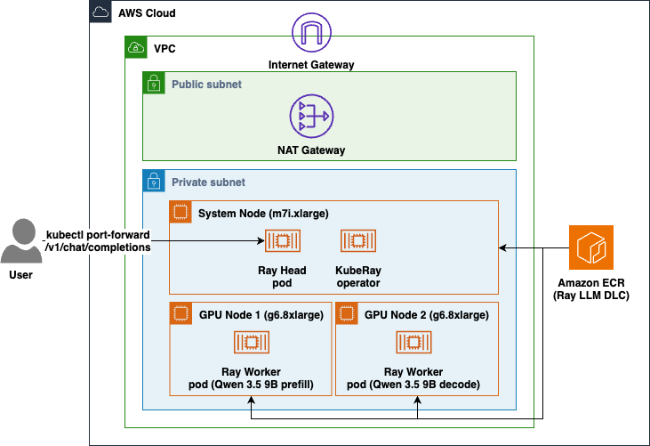

Multi-Node Ray Serve on EKS¶
Deploy a single LLM across two GPU nodes with Ray Serve on Amazon EKS, using AWS DLCs. This sample demonstrates prefill/decode (PD) disaggregation: one node handles the prefill phase and the other handles decode, cooperating behind a single endpoint.
Ray is a distributed compute framework, so most Ray Serve deployments are multi-node by nature. Common patterns include tensor/pipeline parallelism (shard a model too big for one instance), data parallelism (replicate a model for throughput), and prefill/decode disaggregation (separating the two phases of inference onto different nodes).
What this sample builds¶
The scripts will deploy Qwen/Qwen3.5-9B in 2 g6.8xlarge worker nodes: one for prefill and one for decode. The prefill node builds the KV cache for the prompt and hands it to the decode node over NIXL, which generates the response, and that transfer rides EFA via NIXL's libfabric backend.
The ray-llm DLC ships vLLM, Ray Serve LLM, NIXL, and the EFA stack (libfabric and aws-ofi-nccl), and exposes an OpenAI-compatible API with no application code. The entire app in this sample is a block of YAML.
Architecture¶

Prerequisites¶
Install the following tools before running any scripts:
- AWS CLI with credentials configured
- eksctl
- kubectl
- helm to install the KubeRay operator
- envsubst is used to render the manifest
Verify that your AWS credentials are active:
Directory Structure¶
ray-serve-multi-node/
scripts/ # Deployment and teardown scripts for EKS, node group, KubeRay, and the RayService
manifest/ # KubeRay RayService manifest: the entire application
Configuration¶
All scripts share a single configuration file: scripts/env.sh. Override any variable by exporting it before running a script.
| Variable | Default | Description |
|---|---|---|
| CLUSTER_NAME | ray-llm-multinode | EKS cluster name |
| REGION | sa-east-1 | AWS region |
| K8S_VERSION | 1.35 | Kubernetes version |
| SYSTEM_NODE_TYPE | m7i.xlarge | Instance type for system/head nodes |
| SYSTEM_NODE_COUNT | 1 | Number of system nodes |
| GPU_NODE_TYPE | g6.8xlarge | GPU worker instance type (smallest EFA-capable g6) |
| GPU_NODE_COUNT | 2 | Number of GPU nodes (prefill + decode) |
| GPU_NODEGROUP_NAME | gpu-workers | Name of the GPU node group |
| GPU_AZ | (auto) | AZ for the GPU node group; auto-discovered when empty |
| DLC_IMAGE | 763104351884.dkr.ecr.${REGION}.amazonaws.com/ray:serve-llm-cuda-v1.0 | Ray Serve LLM DLC image |
| KUBERAY_VERSION | 1.4.0 | KubeRay operator version |
| RAY_VERSION | 2.58.0 | Ray version |
| RAY_SERVICE_NAME | ray-llm | Name of the RayService |
| NAMESPACE | inference | Kubernetes namespace |
| MODEL_ID | qwen3.5-9b | Model id exposed on the API |
| MODEL_SOURCE | Qwen/Qwen3.5-9B | Hugging Face model source |
Pre-Deployment setup¶
Step 1: Setup variables¶
Go to the root directory of the project. Then run this command:
Step 2: Setup export variables¶
The application¶
There is no Python to write. The application is the serveConfigV2 block in manifest/rayservice.yaml. It uses build_pd_openai_app, which takes a prefill_config and a decode_config and wires the KV-cache transfer between them:
applications:
- name: qwen
import_path: ray.serve.llm:build_pd_openai_app # OpenAI-compatible PD app, built in
route_prefix: /
args:
prefill_config:
model_loading_config: { model_id: qwen3.5-9b, model_source: Qwen/Qwen3.5-9B }
engine_kwargs:
max_model_len: 4096
kv_transfer_config:
kv_connector: NixlConnector
kv_role: kv_both
engine_id: prefill
# Routes the transfer over EFA; without it NIXL uses UCX at TCP speed
kv_connector_extra_config: { backends: ["LIBFABRIC"] }
deployment_config: { num_replicas: 1 }
decode_config:
model_loading_config: { model_id: qwen3.5-9b, model_source: Qwen/Qwen3.5-9B }
engine_kwargs:
max_model_len: 4096
kv_transfer_config:
kv_connector: NixlConnector
kv_role: kv_both
engine_id: decode
kv_connector_extra_config: { backends: ["LIBFABRIC"] }
deployment_config: { num_replicas: 1 }
Ray Serve places the prefill and decode deployments on the two GPU workers, so the two phases run on two different nodes and exchange the KV cache over NIXL.
Step-by-step deployment¶
Step 1: Create the EKS cluster¶
Provisions the EKS cluster (VPC, OIDC, core add-ons) and a CPU system node group (m7i.xlarge) that runs system workloads, the KubeRay operator, and the Ray head. Nodes run in private subnets with outbound access through a NAT Gateway. Cluster subnets are placed in the Availability Zones that actually offer $GPU_NODE_TYPE, so the GPU node group always has a usable subnet. Idempotent: safe to re-run if interrupted. 15-20 minutes on a fresh run.
Step 2: Add GPU worker nodes¶
Creates the GPU node group: 2x g6.8xlarge with EFA enabled, pinned to a single AZ, labeled role=gpu-worker so the Ray workers target them via a nodeSelector. Runs in private subnets with no public IPs. Enabling EFA also makes eksctl install the EFA device plugin, which advertises vpc.amazonaws.com/efa on each node. 5-20 minutes, longer on a first run.
Step 3: Install the KubeRay operator¶
Installs the KubeRay operator via Helm. KubeRay watches the RayService you apply next and wires the head-to-worker join automatically. Idempotent. 1-2 minutes.
Step 4: Deploy the RayService¶
Renders manifest/rayservice.yaml with your image/model/naming variables and applies it. KubeRay creates the head and two worker pods, and Ray Serve LLM brings up the prefill and decode deployments. The script waits for the head to be Ready, both workers to be Running, and finally for the Serve app to report RUNNING. Because each node loads the model, expect several minutes here.
Check status¶
Shows the RayService state, the head + worker pods (with the node each landed on), and GPU capacity.
Invoke the model¶
Port-forward to the Serve endpoint. KubeRay creates a stable <rayservice-name>-serve-svc Service once the Serve app is healthy:
List models:
Chat completion:
curl --fail --silent --show-error \
--request POST "http://127.0.0.1:8000/v1/chat/completions" \
--header "Content-Type: application/json" \
--data '{
"model": "qwen3.5-9b",
"messages": [
{"role": "user", "content": "Explain the benefits of prefill/decode disaggregation."}
],
"max_tokens": 200,
"temperature": 0.7
}'
Verify EFA is being used¶
NIXL falls back to a TCP-speed transport if it cannot use libfabric, without raising an error, so confirm the backend it picked:
for POD in $(kubectl get pods -n inference -l ray.io/node-type=worker \
-o jsonpath='{.items[*].metadata.name}'); do
kubectl exec -n inference "$POD" -c ray-worker -- \
grep -rhoE "Backend (LIBFABRIC|UCX) was instantiated" /tmp/ray/session_latest/logs/ 2>/dev/null
done | sort | uniq -c
deploy_node_group.sh already prints the vpc.amazonaws.com/efa count per node when it creates the group. For a cross-node bandwidth number, the DLC ships a prebuilt NCCL benchmark at /usr/local/bin/all_reduce_perf.
Teardown (reverse order)¶
Delete the RayService¶
Uninstall the KubeRay operator¶
Delete the GPU node group¶
Delete the EKS cluster¶
Scripts Quick Reference¶
| Action | Command |
|---|---|
| Deploy cluster | ./deploy_cluster.sh |
| Deploy GPU nodes | ./deploy_node_group.sh |
| Install KubeRay | ./install_kuberay.sh |
| Deploy RayService | ./deploy_ray_service.sh |
| Check status | ./deploy_ray_service.sh status |
| Delete RayService | ./delete_ray_service.sh |
| Uninstall KubeRay | ./install_kuberay.sh cleanup |
| Delete GPU nodes | ./delete_node_group.sh |
| Delete EKS cluster | ./delete_cluster.sh |